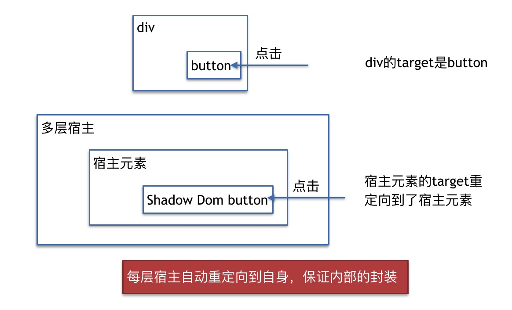
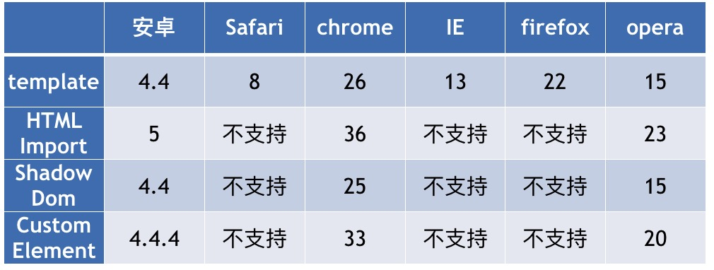
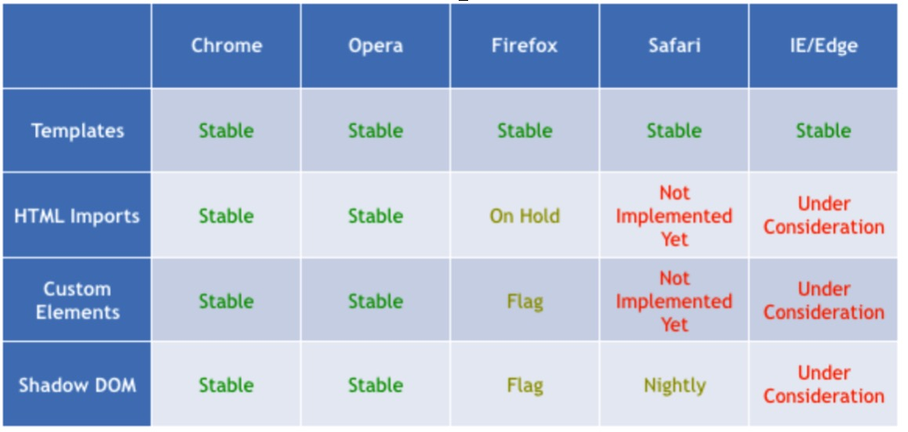
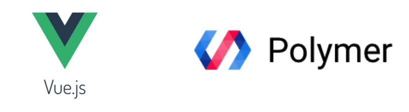

Web Components
前端组件化其实是个持续了很长时间的过程了，从最开始的jquery的插件开始。我们就在封装一些js，css，html来方便下次的复用了。基本各个公司都有自己的组件库，比如我在的点评就是npm的组件。现在组里随着一些项目往React上转，React的组件化工作也在不断的整理中。组件化的过程中出现了一些普遍的痛点。Web components解决了其中的一些棘手的问题，在这里介绍一下Web Components的一些现状。
问题
组件化的过程中主要遇到的一些问题：
- 资源分来管理，重用不便
- 缺乏封装
- 缺乏移植性
首先，js，css和html基本是分开放置的，我们想要重用某块功能的时候，我们需要在我们的js里面想办法引入需要的js；然后得根据组件要求的DOM结构引入HTML；然后在我们的css里引入组件需要的css，这其实是个很痛苦的过程。二是缺乏封装，尤其体现在CSS上，CSS一直都是全局的，没有局部CSS的概念，虽然可以通过Css Modules来模拟，但是还是有一些限制的，下文也会进行比较。三是组件缺乏移植性，就比如迁到了react的环境。当然我们可以在webpack上做一些文章，让以前的组件支持在React项目中使用。可是React自有自己的一套状态管理的机制，很多组件我们还是要重写的，将来切换到新的环境，迁移是有很大代价的。Web Components能够解决上面的这些问题
Web Components简介
Web Components它本身不是一个规范，他是由W3C提出的另外4个规范的合集。这四个规范是：
- Shadow Dom(草案阶段)
- Custom Elements(草案阶段)
- HTML Template(html5)
- HTML Imports(草案阶段)
如上，这四个规范除了template已经成为了HTML5的规范，其他3个还是处于草案阶段的，所以浏览器的支持情况比较差也是可以理解的了。接下来这四个规范一个个聊一聊。
Shadow Dom
他的作用是：管理多DOM树的层级关系，更好的合成DOM。他的中心思想是封装一个完全独立于文档流的子DOM树。他完美的做到了css的封装。当然还有文档内容的封装。以及通过重定向事件做了事件层面的封装。当然封装是他提供的能力，作为使用者的我们其实很关心的是主文档与Shadow Dom的交互，这个在下面会提到。
创建Shadow Dom
使用的第一步是创建，Shadow Dom的创建得基于一个文档中已经存在的一个元素，也就是宿主元素。然后通过createShadowRoot方式创建。注意宿主元素的内容是不会被渲染的。
内容的传递
我们可以通过content元素来将内容映射到shadow dom中来显示。还可以通过设置select的属性来决定那一块被映射。使用如下：
<!-- 页面 -->
<div id="nameTagTwo">
<div class="first">Bob</div>
<div>B. Love</div>
<div class="email">bob@</div>
</div>
<!-- shadow dom -->
<div style="color: red;">
<content select=".first"></content>
</div>
<div style="color: yellow;">
<content select="div"></content>
</div>
<div style="color: blue;">
<content select=".email"></content>
</div>
样式的影响
Shadow Dom的样式被完全封装，内部的样式对外部完全没有影响。文档流中的样式也对内部没有影响。这一点其实很重要。因为只有这样，才能保证组件的无伤。但是我们使用过程中肯定也会想要有时对shadow dom中的样式进行一定的改写的。Shadow Dom提供了这样的接口。
组件->影响文档流
组件内部只能使用:host来改变宿主元素的样式，页面的其他内容也是无法影响的
:host(x-foo:host) {
/* 当宿主是 <x-foo> 元素时生效。 */
}
:host(div) { {
/* 当宿主或宿主的祖先元素是
<div> 元素时生效。 */
}
文档流->组件
文档流可以通过::shadow或者/deep/来影响组件的样式。如果想要修整content元素的样式，使用::content。chrome自己使用了<<和<<<，不过这里就不讨论了。
::shadow和/deep/
<style>
#host ::shadow span {
color: red;
}
#host /deep/ span {
color: red;
}
</style>
/*为了与content一起使用的话::content*/
Shadom Dom与CSS modules
Shadow Dom的CSS封装很好的解决了现在CSS的一个大问题，因为CSS目前还是全局作用域的。所以CSS的模块化还是通过各个技术hack来实现。现在有两种：
- 放弃CSS，使用js或json写样式。缺点：放弃css处理器；JS语法写CSS。代表：Radium，jsxstyle，react-style。实现：行内属性
- CSS编写，使用JS来管理样式依赖。缺点：得与webpack绑定使用。代表：CSS Modules，Vuejs。实现：生成独特的className(文件名—类名—hash值)
上面的两种是目前的CSS Module的实现方式，实际上都是一种hack。Shadow Dom实际上才是CSS模块化的完美解决方案。
事件的封装
Shadow Dom对于事件通过在冒泡阶段target的重定向来封装事件，然后一些可能对页面造成影响的事件，Shadow Dom就会影藏掉这些事件，也就是在冒泡到主页面的过程中被挡住了。

就像图中所示，普通点击时，target会是我们真正点击的元素，而Shadow Dom则会将事件的target重定向到宿主元素身上，主要是为了保证组件内部的封装。多层宿主的时候我也试过了，每层都会重定向到自己的宿主身上。
还有一些事件不会冒泡到主文档流：abort, error, select, change, load, loadedmetadata, reset, resize,scroll and selectstart。
Shadom Dom与Virtual Dom的比较
Shadow Dom是W3c的规范，它主要被我们用来处理Dom树之间的关系，他的主要思想是封装。它本身还是Dom。
Virtual Dom是React的一个选择，它被用来作为高性能的保证。高性能的地方主要体现在，我们平常操作Dom的时候很多时候刷新操作就是将一块HTML替换，我们的操作会触发大量的repaint和reflow，这些操作都是很耗浏览器性能的。Virtual Dom将这些操作打包，并且通过一些Diff算法来得出如何通过最简单的方式改变成我们想要的模样。它本身是Dom的一层抽象，不是真实的Dom。
Custom Elements
这个的一大好处在于拯救了我们还是很缺乏语义化能力的文档。虽然HTML5已经在语义化的道路上走的很远。但是文档的语义化能力其实还是很薄弱。尤其是现在单页应用比较多。很多页面只声明了一个入口的div。而框架为了更大的兼容性，往往生成的就是一堆简单的div。
Custom Elements提供了我们自定义元素的能力。当然，语义化并不是关键，关键是它还提供了我们对语义化元素绑定功能的能力。
Custom Elements--创建
3种方式：
申明 + registerElement
registerElement + new + appendChild
createElement + appendChild
不细讲了，看下面的例子，很容易理解。名字要求是必须以连字符连接的，这个在未来还可以当做作用域来限制。
<x-foo class="x-foo"></x-foo>
<script>
document.querySelector('x-foo').addEventListener('click',function(){
alert('文档中申明出来的');
})
var xFoo = document.createElement('x-foo');
xFoo.addEventListener('click', function(e) {
alert('直接create出来的');
});
document.body.appendChild(xFoo);
var XFoo = document.registerElement('x-foo', {
prototype: Object.create(HTMLElement.prototype)
});
var xFoo = new XFoo();
xFoo.addEventListener('click', function(e) {
alert('注册之后，new出来的');
});
document.body.appendChild(xFoo);
</script>
Custom Elements--绑定功能
其实就是很简单的通过JS的方式绑定功能。代码如下：
var XFooProto = Object.create(HTMLElement.prototype);
// 1. 为 x-foo 创建 foo() 方法
XFooProto.foo = function() {
alert('foo() called');
};
// 2. 定义一个只读的“bar”属性
Object.defineProperty(XFooProto, "bar", {value: 5});
var XFoo = document.registerElement('x-foo', {prototype: XFooProto});
Custom Elements--生命周期
讲到现在，我们的功能还一直是调用方在绑定。这一点其实蛮蠢的，我们想要得到的其实是已经绑定了完整功能的组件。需要的是拿来立即能使用的东西。这里Custom Elements提供了一些生命周期让我们组件可以在初始化的过程中就给自己绑定上方法：
- createdCallback:创建元素实例
- attachedCallback:向文档插入实例
- detachedCallback:从文档中移除实例
- attributeChangedCallback(attrName, oldVal, newVal):添加，移除，或修改一个属性
使用的过程就像下面：
var proto = Object.create(HTMLElement.prototype);
proto.createdCallback = function() {
console.log("创建时触发");
this.innerHTML = "<b>我终于有内容了</b>";
this.addEventListener('click', function(e) {
alert('Thanks!');
});
};
proto.attachedCallback = function() {
console.log("插入文档时触发");
};
proto.attributeChangedCallback = function(attrName,oldVal,newVal) {
console.log(attrName, oldVal, newVal);
};
var XFoo = document.registerElement('x-foo', {prototype: proto});
var xfoo = new XFoo();
xfoo.setAttribute('value',12)
document.body.appendChild(xfoo);
Template
通过上面的Shadow Dom和Custom Elements，其实我们已经实现了组件的自定义以及封装。不过我们的模板最后一直使用的字符串。最后通过innerHtml的方式插入。包括现在其实JS模版其实全是这么实现的。这样子的坏处在于当我们多次使用一个模板的时候(比如刷新操作)，每次都得把一段字符串转化为DOM结构，这其实是很费浏览器的性能的。
Template允许我们在文档中申明一段HTML，他在浏览器的解析过程中不会有任何的副作用。他里面的元素img，script等等都不会发请求。完全无害。但是他又不是仅仅作为字符串存在。他是被解析成了Document Fragment。这样每次重用的时候就不会有解析为Dom这种浪费性能的操作。
Html Imports
现在我们需要的就是将这个组件打包出去。其实一直以来关于HTML的引入就一直没有一个好的解决方案。嵌入iframe的话，页面之间的交互调用其实很麻烦。用一个script标签埋在页面上作为字符串也比较tricky。使用ajax来拉取html的话也会比较奇怪。
除了这个问题，我们一直以来引入资源都是件比较麻烦的事情。比如我们想要引入bootstrap，我们得要手动引入css，再引入js，然后根据bootstrap提供的html结构来使用。
Html Imports就解决了这个问题，他可以用来打包资源与优雅的引入HTML。
<!-- 如下 -->
<!-- <link rel="import" href=“/path/to/imports/stuff.html"> -->
使用其实很简单，就是用link标签，也可以用js来创建一个link标签。不过这个是有同域限制的。感觉还是得HTTP2时代，把现在的CDN分域问题解决了才能有使用的价值。
Web Components的兼容性

如图，chrome算是很激进了，安卓也得是比较新的版本。safari，IE，FF的支持都很差。这里还有一张图：

这张图的意思的FF已经把Custom Elements和Shadow Dom立了development flag，将会去实现他。而Html Imports暂时hold on。这个和Safari暂时hold住了Custom Elements和Html Imports的原因一样。他们都觉得这个和ES6的modules解决的是同一个问题。他们在等待ES6的modules的实施效果。而最新的IE的申明则是，这三个规范都在思考中，应该是都会去实现。
Web Components的polyfill
也就是说这些个规范我们想单纯的使用时没有办法的。但是他是有组织提供了polyfill的。这个polyfill还是有很大的问题的，IE只能支持到IE11，而且shadow dom的CSS封装没有官方的支持也是没法完美实现的。
相关的框架
他的相关框架有Polymer，X-Tag，SKATEJS，Bosonic，这四个框架大部分都是对他的API的友好封装。Polymer是google出品，目前也是有15000的star的，比较火，除了封装了API，他还像Angular一样做了一层数据的双向绑定。但是这几个框架都是使用的上面的Polyfill，所以上面提高的问题他们也都有。
Web Components与React
这里我想比较一下这两者。因为React官网文档专门有一篇解释他们两者解决的是不同的问题。
Web Components个人感觉是HTML提出的模块化，他的目的是复用web组件，主要思想是封装。
React是为了搭建交互式UI，主要是针对不同的状态显示不同的View，处理的是view与data同步。
React官网文档也有实例如何在React中使用Web Components。其实就是在ComponentDidMount的时候初始化一下Web Components，很简单的使用。
Web Components与React Components
这里我还想比较一下这两个组件系统，因为他们其实有不少相似点的。
Web Components优点：
- HTML规范
- 复用性，移植性高
- css样式隔离
- js做js的事情，html做html的事情，css做css的事情(这个有待争议)
React Components优点：
- virtual dom支持服务器渲染，seo友好(这个也有待争议，因为google爬虫是可以跑js的)编写测试方便(这个也有待争议)
- 浏览器支持情况好，新版本支持到IE9，v0.14支持到IE8
- 抽象做的更好，组件状态管理
Web components 与 Vuejs

这里还想提一下Vuejs，因为看CSS Modules的时候看到Vuejs自己也实现了CSS的模块化的，就去看了一下他的文档。发现他几乎是实现了一套Web components。他的组件的创建，注册，继承，生命周期都和Web components很像。看作者自己与其他框架比较的时候也说了，Vuejs和Polymer的区别就在于Vuejs不依赖于Web components，不需要polyfill。所以想使用Web components的可以去使用Vuejs。他能支持到IE9。使用场景会比较多。
总结
总体来说，Web component他是w3c标准，基本会是组件技术的最终方向，但是需要大量的时间来让来让浏览器支持。
转载的话，请注明出处
参考：
- http://www.html5rocks.com/zh/tutorials/webcomponents/shadowdom-201/
- http://www.html5rocks.com/zh/tutorials/webcomponents/customelements/
- http://webcomponents.org/articles/a-quick-polymer-introduction/
- https://facebook.github.io/react/docs/webcomponents.html
- http://benmccormick.org/2014/08/28/custom-elements-by-example/
- https://www.w3.org/standards/techs/components#w3c_all
- http://www.csdn.net/article/2015-08-11/2825439-vue